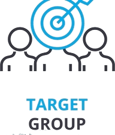
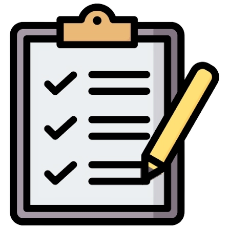

P R O J E C T E A S E
"Reach for help, take care of your self and reach your dreams"
• PROJECT E.A.S.E
A name founded and created with the only sole purpose to serve and aid students.
- E- Empowering
- A- Academic
- S- Support and
- E- Efficiency
• OBJECTIVES
With the new arrival of this new curriculum students are now faced with an unfamiliar routine of learning and activities. We aim to provide students with academic support, practical guidance, and encouragement to help them manage academic stress, build confidence, and develop healthy and effective study habits. The initiative aims to remind students that asking for help is okay and that their well-being is matters.
Objective list:
- Academic support
- Practical Guidance
- Encouragement
- Management of academic stress
- Building of confidence
- Development of healthy and effective study habits

• TARGET GROUP
This program aims to help and serve students who are experiencing experiencing academic pressure, struggling with schoolworks, or having difficulty balancing their academic responsibilities and personal well-being. Through this program we would be able to provide needed support for students suffering under academic stress and uncertainty.

• PARTNERS
In partnership with Mayor Matro, Municipal Health Center, Justin Celeste, and Florencio Costa.
- Mayor Matro
- Municipal Health center
- Florencio C. Costa
• ASSESSMENT
The program will assess its effectiveness through student feedback, reflections on their academic experiences, and suggestions for improvement. It will also evaluate whether students have gained useful strategies for managing academic stress, setting realistic academic goals, and improving their study habits. This program shall serve as a much needed support for every student under the criteria.

a™This program is brought and raised to you by Group 1 from 10 - Peridot"